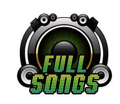
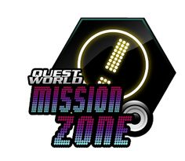

Las modalidades de juego hasta la versión "The Prex" son Normal, Hard, Crazy (que se llamó Extra Expert en la versión EXTRA), Double (Exc. versus), Battle (solo en versus) y Non-Stop Remix. Esta última incluye remezclas de las canciones ya incluidas, las cuales son mucho más difíciles en relación al original y duran aproximadamente el doble que una canción común.
Las modalidades de juego en versión "The Prex 3 " en adelante son Normal, Hard, Crazy, Battle (solo en versus), Double o Freestyle (Exc. versus), Nightmare (Exc. versus) y Half-Double (Exc. versus). Normal, Hard y Crazy son distintas dificultades de juego ultilizando un solo lado del tablero. En Freestyle y Nightmare un solo jugador utiliza el tablero completo. La modalidad Battle aparece en vez de Freestyle o Nightmare si hay dos personas jugando, y consiste en un juego de enfrentamiento donde gana el jugador con mayor puntuación. En las últimas versiones del juego, esta modalidad ha sido sustituida por Combo Battle, donde gana el jugador que ejecute el mayor combo. Al finalizar cada ronda de juego, se muestran en la pantalla las estadísticas de cada jugador y sus calificaciones, que pueden ser F, D, C, B, A, S (AA) y SS (AAA) (siendo F la mínima calificación y SS la máxima) dependiendo de los puntos adquiridos en la canción. Las modalidades de juego en versión "Exceed" en adelante ya no se basan en dificultades, sino en estaciones:
Arcade Station: aquí están las canciones de siempre, subdivididas en cuatro canales:
En la versión "Zero" desaparece el modo "Battle Station" y se añaden las modalidades de "Remix Station", "Mission Station" (jugar canciones específicas con ciertos objetivos para habilitar contenido adicional), y "Easy Station", diseñado para jugadores principiantes con canciones de nivel 3 o inferior.
En la versión NX, "New Xenesis" existen los siguientes modos:
En la versión "NXA" (NX Absolute) se expande el "World Max" siendo el doble de misiones que en la versión NX2, desaparece el modo "Training Station" siendo sustituido por la "Easy Station" apareciendo por primera vez en la "Zero", pero con muchas más canciones que la versión "Zero" y aparece por primera vez el "Brain Shower" en el que su modo de juego consiste en diversos retos de intelecto dividido en tres canales ("Matemáticas", "Memoria" y "Colores"). En esta estación pueden jugar dos personas con un crédito.
Las modalidades de juego desde la versión "Fiesta" desaparece el World Max por el Quest World y aparecen las modalidades Skill Up Zone, el Mission Zone. el Music Train y el "Shortcut" y desaparecen los "Another Stepss". En Arcade Station, en vez de cambiar dificultades, las flechas de arriba cambian de carpeta. Presionando START o tecla central cambia a selector de dificultades, debiendo presionarlo de nuevo para iniciar la canción.